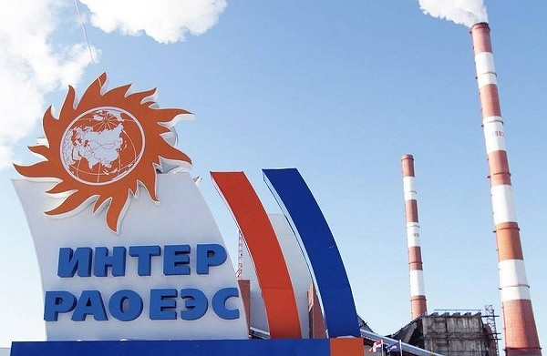
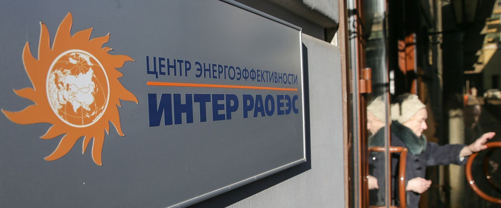

О компании
Дата основания и краткое описание
АО «Интер РАО – Электрогенерация» объединяет российские генерирующие активы Группы «Интер РАО», за исключением электростанций в Омской, Томской областях и Башкирии.
В состав АО «Интер РАО – Электрогенерация» входят 22 крупнейшие электростанции России, суммарной установленной электрической мощностью 21,457 ГВт (на конец 2021 года). Компания проводит политику, направленную на оптимизацию системы управления активами и сокращение управленческих затрат, реализует инвестиционные проекты в сфере строительства новой генерации и сокращения инвестиционных затрат.
АО «Интер РАО – Электрогенерация» зарегистрировано 15 июня 2011 г. Единственным акционером АО «Интер РАО – Электрогенерация» является ПАО «Интер РАО», которому принадлежит 100% акций.
ПАО «Интер РАО» — российская энергетическая компания, управляющая активами в России, а также в странах Европы и СНГ. В сферу деятельности Интер РАО входит производство и сбыт электрической и тепловой энергии, международная энергетическая торговля, инженерные услуги, проектирование и строительство энергообъектов. Также под контролем Интер РАО — ряд энергетических компаний за рубежом, включая тепловые и гидроэлектростанции, электросетевые и энерготрейдинговые компании.
Интер РАО — одна из крупнейших в России публичных электроэнергетических компаний по рыночной капитализации, которая по состоянию на 2020 год составила 554,6 млн рублей. Общая численность персонала Группы «Интер РАО» на конец 2020 года составляет 48 851 человек.
Компания занимает третье место в российской отрасли по величине установленной мощности, обеспечивая генерацию более 11% электроэнергии в ЕЭС РФ. Сбытовая деятельность группы обеспечивает более 17% розничных поставок электроэнергии на российском рынке. «Интер РАО» – единственный участник экспортно-импортных операций на внутрироссийском оптовом рынке электроэнергии и мощности (ОРЭМ).
Штаб-квартира компании находится в Москве в комплексе зданий Электролуч. Полное фирменное наименование на русском языке — Публичное акционерное общество «Интер РАО ЕЭС».
Краткая история
ЗАО «Интер РАО ЕЭС» было образовано в 1997 году как дочернее предприятие РАО «ЕЭС России». Первоначальной специализацией Интер РАО была международная торговля электроэнергией. С 2002 года компания начала самостоятельно осуществлять экспорт электроэнергии из России. В том же году начало осваивать производство электроэнергии, арендовав энергоблок на Ириклинской ГРЭС. В 2003 году владельцем пакета в 40 % акций «Интер РАО» стал концерн «Росэнергоатом», компания стала основным оператором экспорта электроэнергии из России. В 2005 году «Интер РАО» становится владельцем следующих активов:
- 50 % в АО «Станция Экибастузская ГРЭС-2»
- 25 % + 1 акция ОАО «Северо-Западная ТЭЦ»
- 70 % в TGR Enerji
- 51 % в ЗАО «Молдавская ГРЭС»
В апреле 2015 Группа «Интер РАО» подписала протокол о реализации проекта строительства ГЭС «Чиуидо-1» мощностью 637 МВт в Аргентине и завершила процесс выделения из «ТГК-11» компании «Томская генерация». В результате реорганизации теплового бизнеса Группы в Омской и Томской областях были образованы следующие компании: «ОмскРТС» и «ТомскРТС».
В июне Группа «Интер РАО» ввела в эксплуатацию девятый угольный энергоблок установленной мощностью 225 МВт на Черепетской ГРЭС в Тульской области. Ввод нового энергоблока позволил вывести из эксплуатации устаревшее угольное оборудование первой очереди без снижения объёма выработки электроэнергии и суммарной установленной мощности станции. В июле 2015 началась реализация инвестиционного проекта по завершению строительства в Уфе Затонской ТЭЦ – филиала «Башкирской генерирующей компании» установленной мощностью 440 МВт.
В июле 2016 года ООО «Калининградская генерация» (совместное предприятие АО «Роснефтегаз» и ПАО «Интер РАО») приступило к строительству генерирующих мощностей на территории Калининградской области. В соответствии с решением Правительства Российской Федерации в регионе будут построены три газовых электростанции и одна угольная суммарной мощностью 1 ГВт.
В январе 2017 года группа «Интер РАО» ввела в эксплуатацию турбоагрегат Т-120 на Омской ТЭЦ-3, рассчитанный на выработку 160 Гкал тепловой и 120 МВт электрической энергии, завершив обязательную программу модернизации генерирующих мощностей. В апреле ФАС наградила ПАО «Интер РАО» «За содействие в поддержании конкурентной среды, а также за существенный вклад в развитие антимонопольного законодательства и законодательства в области тарифного регулирования в сфере электроэнергетики».
1 марта 2019 года, Группа «Интер РАО», Госкорпорация «Росатом» и Системный оператор ЕЭС России учредили Ассоциацию организаций цифрового развития электроэнергетики «Цифровая энергетика», цель которой – выработать консолидированную позицию по цифровому развитию отрасли. 6 марта Введена в эксплуатацию Прегольская ТЭС в Калининграде мощностью 455,2 МВт. Таким образом завершено строительство газовой генерации по программе обеспечения энергетической безопасности региона. 12 апреля ПАО «Интер РАО» присоединилось к Глобальному договору Организации Объединённых Наций - крупнейшей международной инициативе ООН в сфере корпоративной социальной ответственности и устойчивого развития. 30 мая, «Интер РАО» консолидировала 100% акций ПАО «Томскэнергосбыт». В августе Международное агентство Fitch Ratings в рамках ежегодного пересмотра повысило на одну ступень международный кредитный рейтинг Группы «Интер РАО» по глобальной шкале до уровня ВBB, прогноз стабильный. В декабре «Интер РАО» завершило реализацию 50% акций АО «Станция Экибастузская ГРЭС-2» (Казахстан). В результате Группа «Самрук» стала владельцем 100% акций угольной электростанции.
Собственники и руководство
Основными акционерами Интер РАО остаются государственные организации. Крупнейшие акционеры "Интер РАО" по состоянию на 4 июня 2019 года:
- Российская Федерация — 0,00000000000087%;
- Группа Роснефтегаз — 27,63%;
- ПАО «ФСК ЕЭС» — 8,57%;
- Группа «Интер РАО Капитал» (квазиказначейские акции) — 29.56%;
- Акции в свободном обращении — 34.24%.
Председатель правления компании — Борис Ковальчук.